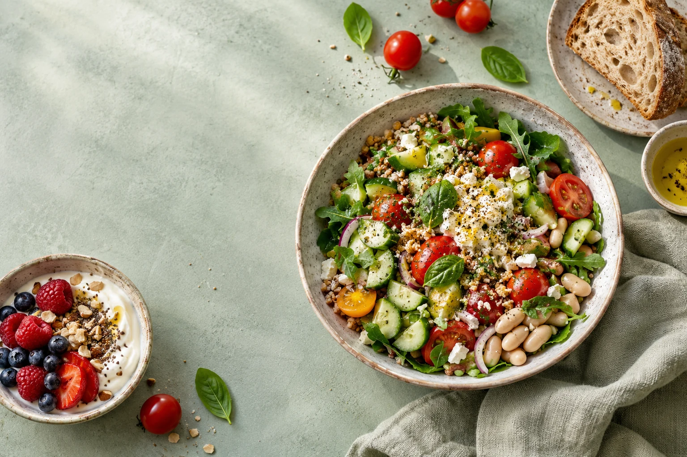

Twoja sytuacja jest punktem wyjścia.
Przyglądam się Twoim wynikom badań, sposobowi odżywiania i codziennym nawykom.
Jestem Ola, dietetyczka kliniczna. Specjalizuję się w PCOS i insulinooporności. Pomagam uporządkować odżywianie i wybrać kolejne kroki dopasowane do Twojego życia. Przygotowuję też e-booki o PCOS i perimenopauzie.

Pracuję z kobietami, które chcą spokojnie uporządkować odżywianie i dopasować je do swojej codzienności.
Gdy chcesz zrozumieć, jak jedzenie może wspierać Twoją codzienność z PCOS, i wybrać pierwszy krok, który ma sens dla Ciebie.
Gdy po diagnozie masz wiele pytań i chcesz ułożyć posiłki tak, by pasowały do Twojego dnia, bez listy zakazów.
Gdy planujesz ciążę albo już się starasz i chcesz spokojnie zadbać o odżywianie, w porozumieniu z lekarzem prowadzącym.
Gdy zauważasz zmiany w ciele i codziennych nawykach i chcesz przyjrzeć się im spokojnie, krok po kroku.
Po diagnozie łatwo pogubić się w radach o diecie, badaniach i suplementach. Pomogę Ci uporządkować informacje i przełożyć je na codzienne decyzje.
godzin szkoleń
Przyglądam się Twoim wynikom badań, sposobowi odżywiania i codziennym nawykom.
Szukamy rozwiązań, które uwzględniają Twoje ulubione posiłki, czas i możliwości.
Wyjaśniam zalecenia, żebyś wiedziała, co robisz i dlaczego.

Znam PCOS także z własnego doświadczenia.
Jestem dietetyczką kliniczną i sama mam doświadczenie z PCOS. Wiem, jak trudno odnaleźć się w sprzecznych radach i kolejnych próbach zmiany odżywiania.
W pracy z kobietami z PCOS i insulinoopornością łączę analizę wyników badań z praktycznymi zmianami w posiłkach. Zależy mi, żebyś rozumiała zalecenia i potrafiła korzystać z nich w swojej codzienności.
Poznaj moją historięBadania, suplementy, codzienne posiłki i obserwacja samopoczucia. Wybierz temat, w którym potrzebujesz więcej jasności.
Uporządkuj pytania o suplementy: po co je stosować i co omówić ze specjalistą przed zakupem.
Przygotuj pytania na wizytę i uporządkuj dotychczasowe wyniki badań.
Jak podejść do odżywiania przy PCOS, kiedy Twoim celem nie jest odchudzanie.
Przyjrzyj się zmianom w sylwetce i codziennych nawykach w okresie perimenopauzy.
Dziennik cyklu i samopoczucia, który pomoże Ci przygotować się do rozmowy z lekarzem.
Uporządkuj wieczorne posiłki i nawyki. Sprawdź, co warto obserwować przed rozmową o problemach ze snem.
Zapowiedzi e-booków. Tytuły i okładki są propozycją; materiały są w przygotowaniu.
1–3 z 6
Podczas pojedynczej konsultacji przyjrzymy się Twoim wynikom badań, sposobowi odżywiania i temu, z czym trudno Ci sobie poradzić na co dzień. Ustalimy priorytety i zmiany, od których możesz zacząć.
Doświadczenia moich podopiecznych
Ola, muszę się pochwalić choć dopiero co zaczęłyśmy! 😀 Na wadze dopiero -3kg, ale już się zadział mały cud. Z twarzy zaczęły znikać mi pryszcze, nie mam już tak wielkiej ochoty na słodycze!! Nawet nie wiesz jak się cieszę ❤️ a to dopiero początek naszej współpracy
Dzięki współpracy z Olą schudłam 8 kg w 3 miesiące bez wyrzeczeń. Hormony się ustabilizowały, energii mam więcej niż kiedykolwiek!
Najlepsza decyzja jaką podjęłam! Aplikacja jest super intuicyjna, a Ola zawsze dostępna gdy potrzebuję pomocy. Polecam z całego serca!
Po latach walki z PCOS w końcu znalazłam kogoś, kto rozumie moje problemy. Dieta jest dopasowana do mnie, a nie ja do diety!
Miałam problem z insulinoopornością i nie widziałam efektów mimo wielu diet. Z Olą w 2 miesiące schudłam 5 kg i wyniki badań się poprawiły!
Nie wierzyłam, że dieta może być elastyczna i smaczna jednocześnie. Ola udowodniła mi, że to możliwe. Gotuje dla całej rodziny z tych samych przepisów!